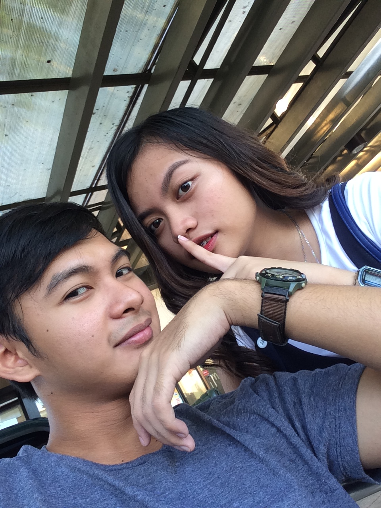

Hello to my prettiest babygirl over the universe na subrang mahal na mahal na mahal na mahal ko 99999999999999... (Actually I don't know how to start iso agistorya nak lattan. I don't remember how we started but I recall some, here we go when the first time I saw you jakamo nga dumanon ta kastoy gapo lang ti happy meal of mcdo hahaha nagellek panunuten ngem thats how our relationship starts but before that siak tay tao nga awan bibyang na sabali nga tao iso dinak agiaadd or something nga maki fc (feeling close) ngem nalaing nak agstalk haha ngem idi dika pelang amammo ngem mangmangeg ko nagan mo idin ken nakitak biit tay pic mo iso ti ammok ket baket kan mga 20+ iso kasla kasjay pinagkitak idi iso dik pinansin idin baket met gayam kunkunak hahaha peace bebeko tas djay fast forward ti kakadwam idi pelang ket dagijay barkadak nga kakabsat kon mcdo tay immona nagkikita but dik unay pansin dik kumitkita kanyako kase awan interest ko idi ti lang amammok tay kadwam kase batch ko idi highschool then djay ada tay time jakamo in follow ka latta twitter'en tas nag reply and chat ako sayo I don't know nu kasano but djay naghappy ka gamin nagkwela nagkulit kasjay ken haan ka kj dika natangsit nasingpet ka nakasingsingpet jakamo pay nu kasano ta nakadanon djay libre libre basta ti lang goal ko idi ket agpalibre tas djay ibagbagak lang idi ngem dinak seryoso hahaha ngem naseryoso iso djay unexpected nagkadwa ta not totally nga kadwa ta kase adan maica idi nagenjoy idi jakamo nagbully nak kanyam ket djay ta lang nagkadwa ken haan ta pay amammo mesamesa idi but ti feeling ko ket agamammo tan since fetus hahaha oo simula pagkabuo hanggang lumaki tayo kasla agamammo tan kasjay tas idi bulbullyen ka ket nagkyut ka agrered kan sa pay nag enjoy djay nga aldaw tas inbagak idi bagbagik idi nga ilibre ka kase inlibre nak kayat ka gamin kadwa pay djay iso diko namalmalayan kayat ka gayam idin nahulog na pala ako sa uto uto mo hahaha ngayon ko na aaminin to uu unti-unti nagugustohan na kita nun everyday agchat ta ket mabuo tay aldaw kon naghappy nakon because of you (btw iso happy meal ket iso kuma ilibrem ngem sa totoo lang jakamo pay unay happy meal idi basta ammok ada ayayam na ngem haan na djay inlibrem basta makanen a hahaha uray ana kunak idi haha mwamwa) you are so beautiful talaga I can't get over because that, it was so unexpected. Love is unexpected it's so mysterious diba bigla bigla lattan haan mo mamalmalayan ada gayamen It needs time lang to develop ti subra tapnu makitam ti ususto. We're alike but at the same time ket opposite naggulo aya ngem agpadpadata idi nga agibatbati but ngem sabali pinagkita ta life I'm more serious about life but sika ket haan like you don't care you have a different world like you are just watching kdrama especially to Lee Jong Suk and awan bibyang mon basta agbuybuya kan hahaha maymayat met kastan ngem ada sabali nga ubra diba hihi iso kaykayat ka agbuybuya kdrama ngem rumwar ta tiltillada papanam or sino man makadwam you know alisto nak agselos iso damdamagek kadwam nu ada man lalaki damagek nagan da amin jak ipalubos nga adda mapasamak kanyam nga madi iso kasjay ken nu awan nak dapat dika agpigsa pigsa ammom detan! awan nak nga mangprotektar kanyam iso kasjay ungungtan ka kase jak kayat ada mapasamak kanyam nga madi ken kayat ka iguide for your own good iso haan mo kuma gurguraen ibagbagak kanyam nu kasjay baby dik kayat lang nga adda mapasamak kanyam nga madi I love you so much that jak kaya nu maawan ka biag kon, ado kurang ta storyk ngem ammom detan baby hihi ) super duper love ko ikaw ??, when the first I saw you I didn't know you are the one for me and the one nga nakabaybayag ko sarsarakenen for my life (kahit exotic ka pa love padin kita ) and you're the one change me a lot about my attitude and everything, and my dreams too kase before ako yung taong walang pupuntahan yung buhay but when the time I met you for real like we talk a much and we talk about our life, our family, and our problems. Ayyy sheeeet sabi ko sa sarili ko ikaw na talaga ang hinahanap hanap ko sa buong buhay ko the only one na gusto talaga kahit anong sabihin ng iba kahit alien or ano pa man malaki mata subrang laki na parang airport na ang forehead mo wala akong pake basta sabi ko sa sarili ko ILOVEYOUSOMUCH itaga mo pa sa platinum (ps kahit maitim pa kili kili mo sayo lang ako ). When the time you share me everything about your past, I feel broken, I feel empty awan maka explain how hard djay so I put myself to it then I understand every single thing baby I know it's not hard it's very hard super hard to you djay napasamak but you are still standing, you are strong that overcome all the problem I know you are not totally fine but I'm here for you I will never leave you. I promise you that you will never be alone, never again. I would love you till the moonlight and love you till the day, everyday and always I will come to you in need and I'll help you no matter what. And I promise I won't give up on you no matter how hard the situation is even in the darkest time of your life I wont leave you. At tandaan mo to ikaw lang ang gusto ko talaga wala ng iba di ako maghahanap ng iba dahil you're the one for me and I'm sure with that kahit pagtulakan mo man ako palayo ayaw ko padin na ikaw ay aking iwan manigas ka hahaha sinasabi ko nga sayo dika agswerte nu ibati ka uray ana rigat dik kayat walang dahilan para ako'y mapagod sayo kahit napaka topakin mo I wont leave you period no matter what.! "you're the perfect melody, you're the only harmony that I wanna hear, you're my favorite part of me, when you're standing right next to me, I've got nothing to fear" you're a one in a zillion (kahit sabi mo marami kang kamukha na alien ikaw lang nagiisa ) Kaya wag ka maghahanap ng iba wag mo ko iwanan pakyu patay na patay ako sayo diko kaya na mawala ka sa buhay ko I don't what to do so tiltilaada mapanpanunut ko I rather kill myself than find other woman kahit inaaway mo ko kahit gusto mo okay lang sakin dahil subra kitang mahal baby. "If you have a choice, what would you do?" I would love you eternally and I'll always choose you for the rest of my life. Please promise me that you won't leave. You're an answered prayer, you're the one I couldn't live without even if the world would turn their back against me, as long as you're with me I'm still the champion. I'm with you until the end of the road I will be the greatest fan of your life I promise my love, my heart and my time so don't worry this love is to precious for me to let go. You're the blessing for me and I would love to fall in love again with you, ] over and over again. You're the one, you are, you will and always will be the only the best prettiest. I love you so much and that distance doesn't make sense at all. Our current situation is not our final destination just trust him and put him as the center of our relationship so that we can surpass ir all problems? Scars are beautiful babygirl, they bleed but I know we can surpass it all, tayo pang dalawa babygirl. awan makapagsina kanyana nu diketdi tay panakatay tan to lang. I'm sorry for everything I've done wrong, mistakes, and my pride we always argue and i don't want that to happen again even tho it's normal in relationship but i don't want you to feel bad or feel sad, hurt because of me because me either I'm hurt because I know I am the one that make you feel sad, hurt, feel empty, and the worst is you over think of things and can't sleep and feel bad, I'm sorry baby I'm very sorry babygirl. Just trust me baby I will do everything to you, I won't do anything wrong to ruin our relationship ever I won't leave you I'm here for you life time mahal (mwamwamwamwa hugtighttt) Smile na yan yiieee keleg mats my babygirl na oh pritie byotipol wanderpol brainy bebeko you have me for life if some people try to break us dude, I won't let that happen fuck them ;P hahaha remember? "ako'y sao at ika'y akun lamang" Im all about you baby my feelings for you grows everyday adan to tay time nga haan ta kaylangan ag adjusten kase we'll be with each other and I can't with for that day to come babyko, ikaw yung babae na pinapangarap ko at hinahanap ko noon, ngayon, at magpakailan pa man. You're the best all the best. Seryoso to walang kalait-lait hahaha peace meron pero kunti lungzxcs (insert peace emoji) OO todo na to pawer amazing hahaha supah dupah uttot pawah! (ananosam latta kuma toy uttot ko uray ta nakabangbanglo met kasla perfume ta lang HAHA mwa). Thank you for making my heart feel the real love that I never felt to someone. You're always my namba wan and thank you because of you I change a lot everything and the will to live its burning, kaslang tay kapudotan nga stars tay blue napudpudot pay dijay ti pinagayat ko kanyam SIKA LANG AYAYATEK!!! You're the only that I want for the rest of mylife. "Love never fails" 1 Corinthians 13:8. I swear I will fight for us, and no one can touch us, and this love no one! You and I will always be together lifetime you are more than, I would fight for you. ILOVEYOUSOMUCH babygirl I'll become even more stronger so the I'll be your strength baby, all of the challenges we'll break thorugh and we'll won the battle even world is against us I DON'T CARE we'll won the battle anyway we can do it no matter how hard the challenges. Just remember this ILOVEYOU ALWAYS ILOVEYOUSOMUCH HAPPY THIRD MONTHSARY BABYKO <3 ILOVEYOUMORETHANMOST!! MORE YEARS OF LOVE. AND KATOPAKAN ILOVEYOUSOMUCHMORELIFETIME